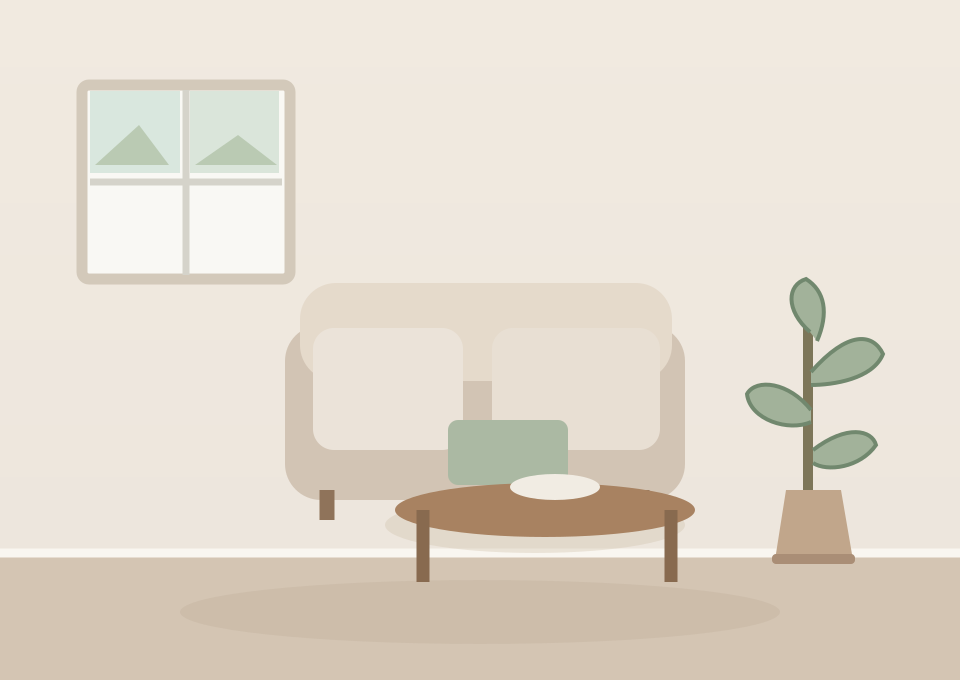
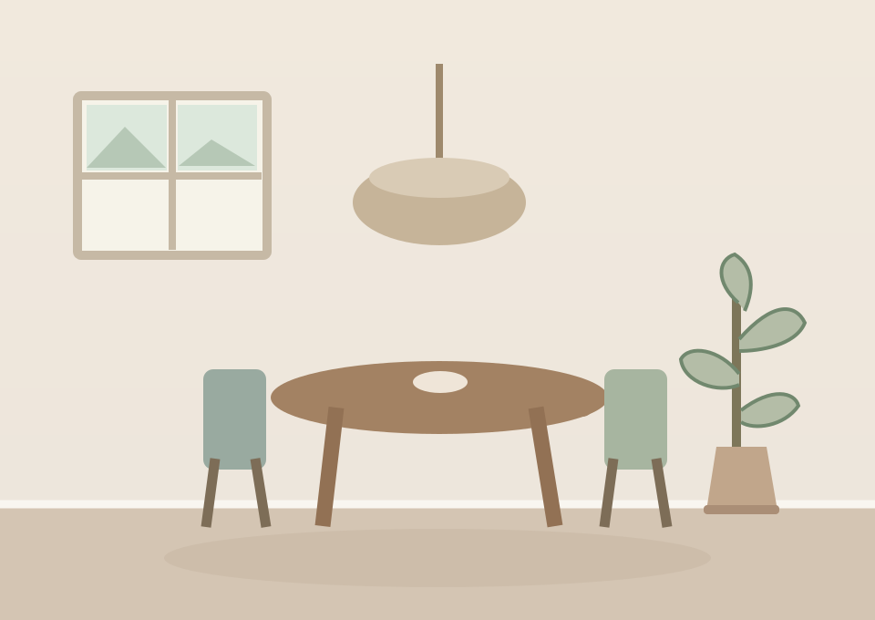
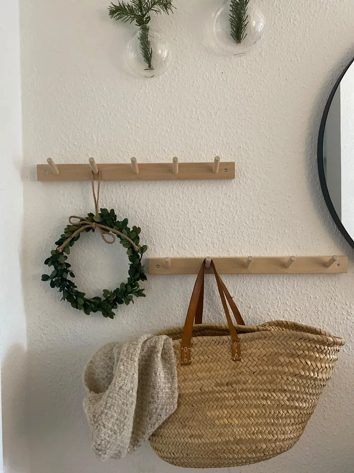
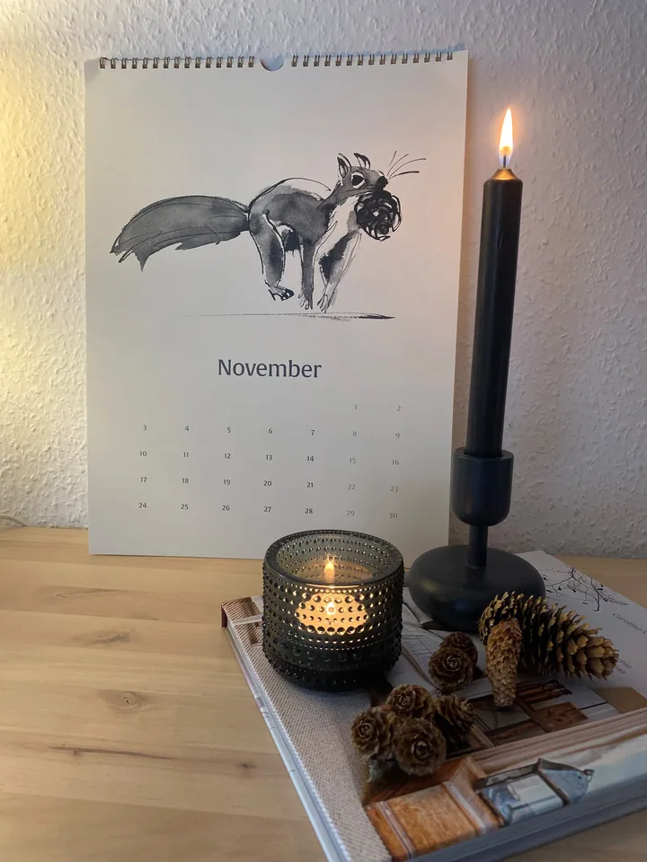
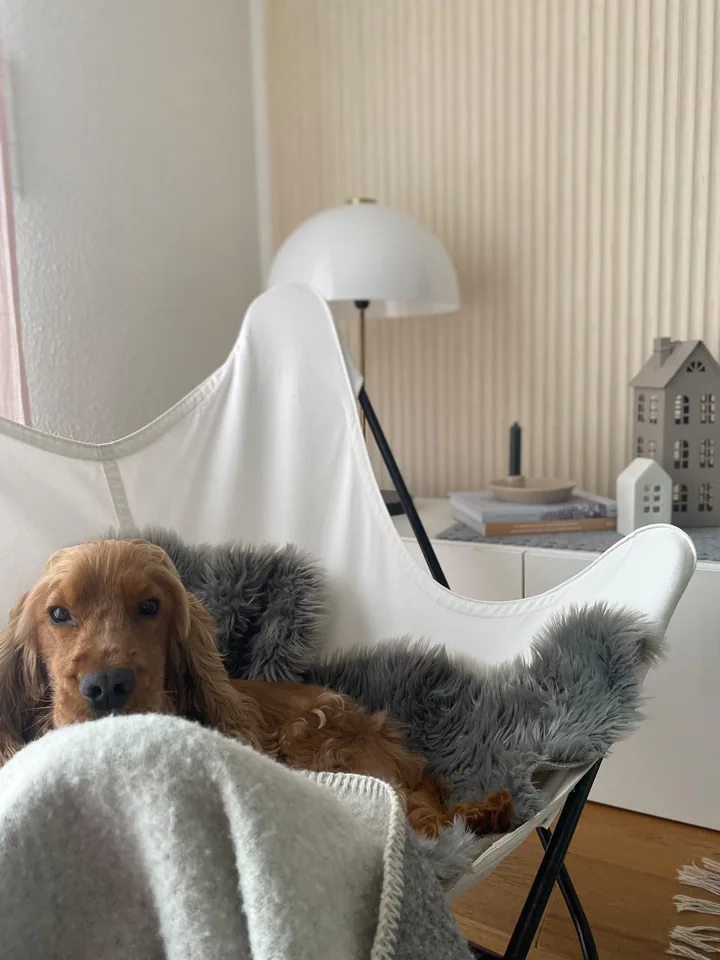
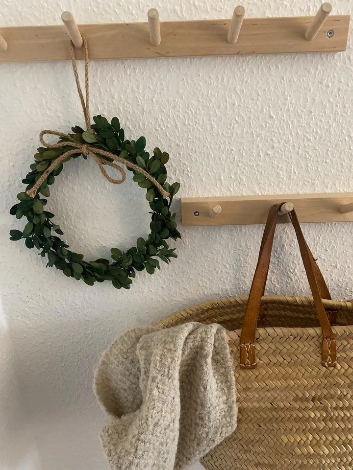
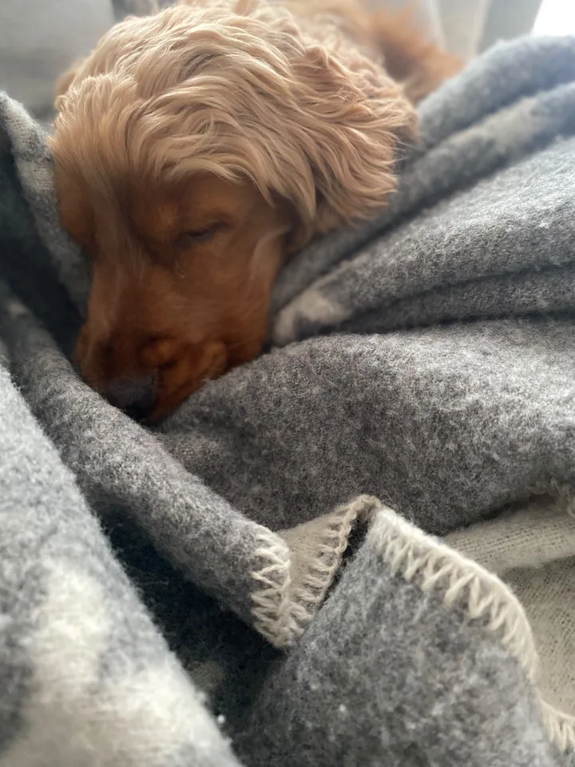
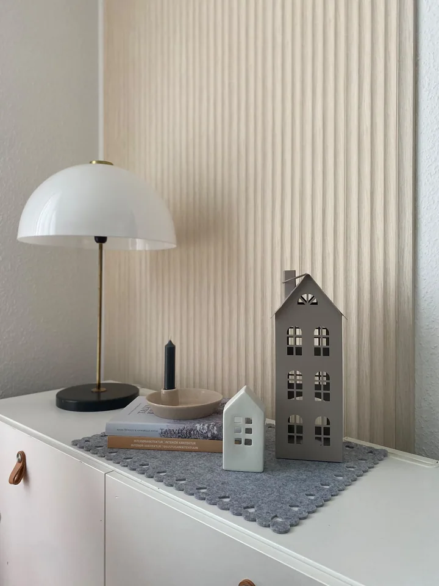
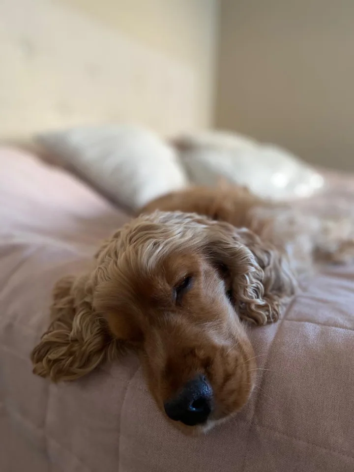

Ruhiges Wohnen
Warmes Beige, helles Holz und ein gemütliches Sofa.
EIN HAUCH NORDEN
Drei einfache Ideen, inspiriert von natürlichen Materialien, sanften Farbtönen und nordischen Räumen.
Diese Illustrationen zeigen Beispielkonzepte, keine abgeschlossenen Kundenprojekte.

Warmes Beige, helles Holz und ein gemütliches Sofa.

Erdige Grüntöne, dezente Details und weiche Texturen.

Klare Linien, viel Tageslicht und ein offenes Raumgefühl.
EIGENE FOTOGRAFIEN
Eine kleine Auswahl eigener Alltags- und Einrichtungsfotos: Naturmaterialien, warmes Licht und behagliche Details. Diese Bilder zeigen keine abgeschlossenen Kundenprojekte.









| Konzept | Geeignet für | Farben |
|---|---|---|
| Ruhiges Wohnen | Wohnzimmer | Beige und helles Holz |
| Natürliche Wärme | Familienzimmer | Sanftes Grün und Eiche |
| Hell & luftig | Esszimmer | Creme und warmes Weiß |